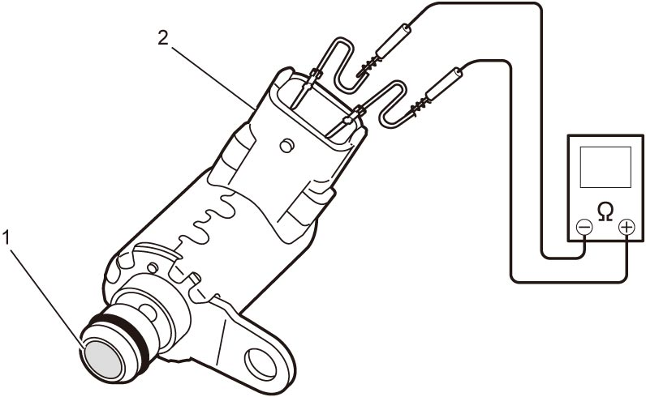
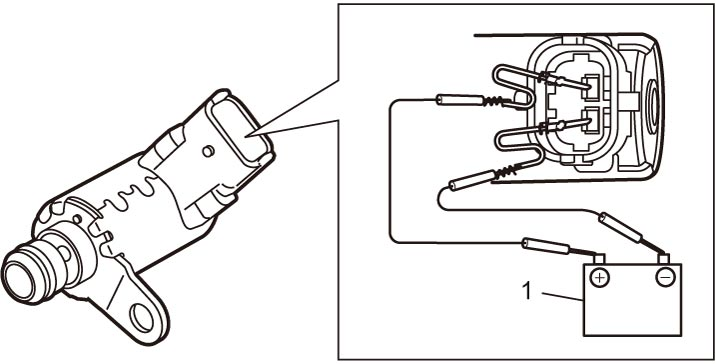

1C
| VDOP Solenoid Valve Inspection |
•Remove VDOP solenoid valve. 
•Check VDOP solenoid valve as follows.
If faulty condition is found, clean or replace VDOP solenoid valve.
•Check VDOP solenoid valve as follows.
If faulty condition is found, clean or replace VDOP solenoid valve.
—Check oil filter (1) for clogging.
—Check resistance between terminals of VDOP solenoid valve (2).
 —Connect battery (1) to VDOP solenoid valve as shown in figure, and check for operating sound.
—Connect battery (1) to VDOP solenoid valve as shown in figure, and check for operating sound.
—Check resistance between terminals of VDOP solenoid valve (2).
VDOP solenoid valve resistance
Approx. 18.2 Ω at 20 °C (68 °F)

 "Expand image")

 "Expand image")